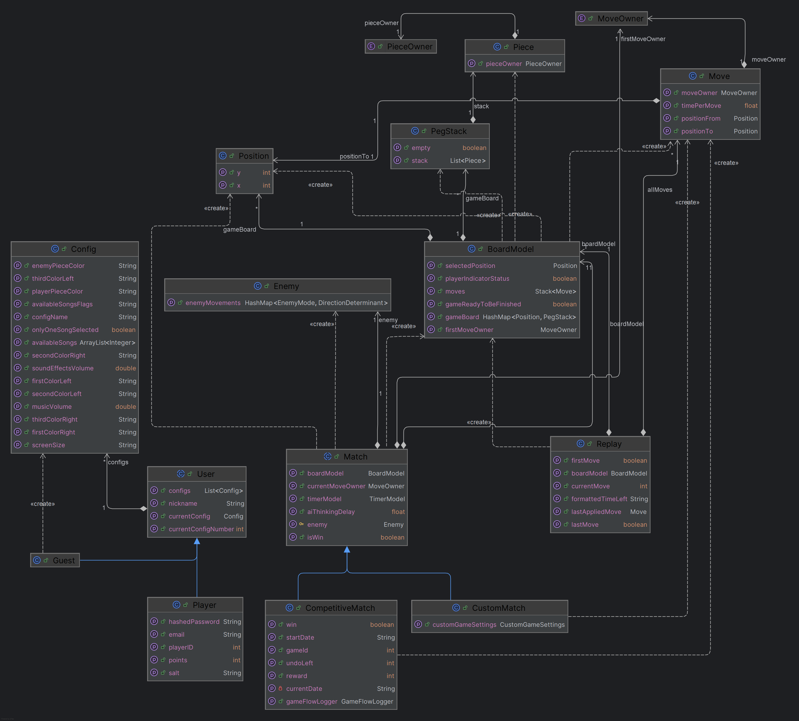

Implementation
Our game was implemented as a JavaFX application in alignment with the MVP patterns.
Domain Model
The domain model shows the overview of our model.

Resources and Expertise Used
- Game design and balancing
- We turned the board game rules into clear digital rules and made sure the edge cases will not break the game.
- Object-oriented programming
- We separated the code into objects with responsibilities, so move logic, scoring, and AI are easier to read and update.
- Data handling
- Game results and moves are stored in a structured way, which lets us build the stats view on the website and leaderboard in-game.
Implementation Notes
Smart AI was implemented to challenge the player, while Easy AI is completely unpredictable and can be used to get to know the game more.
Moves are logged as structured so they can be sent to the webpage "Stats".